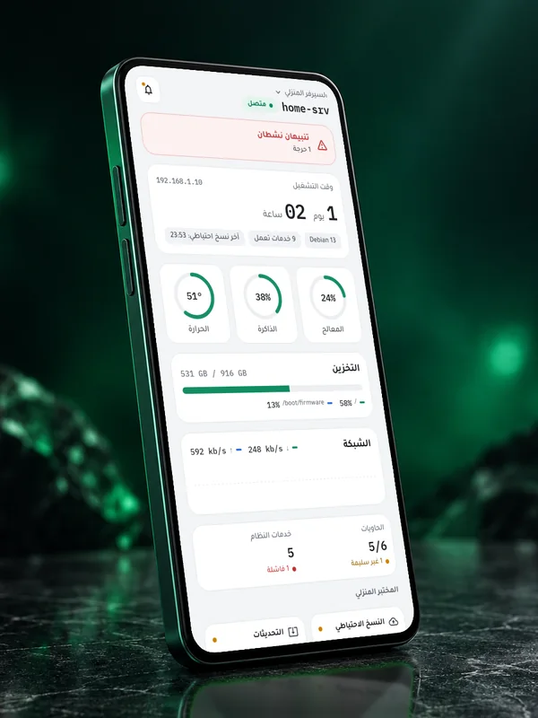
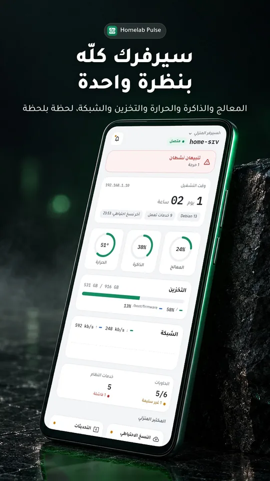
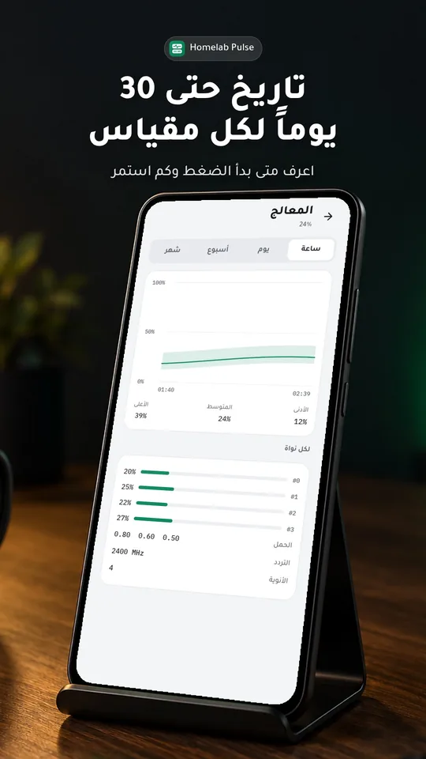
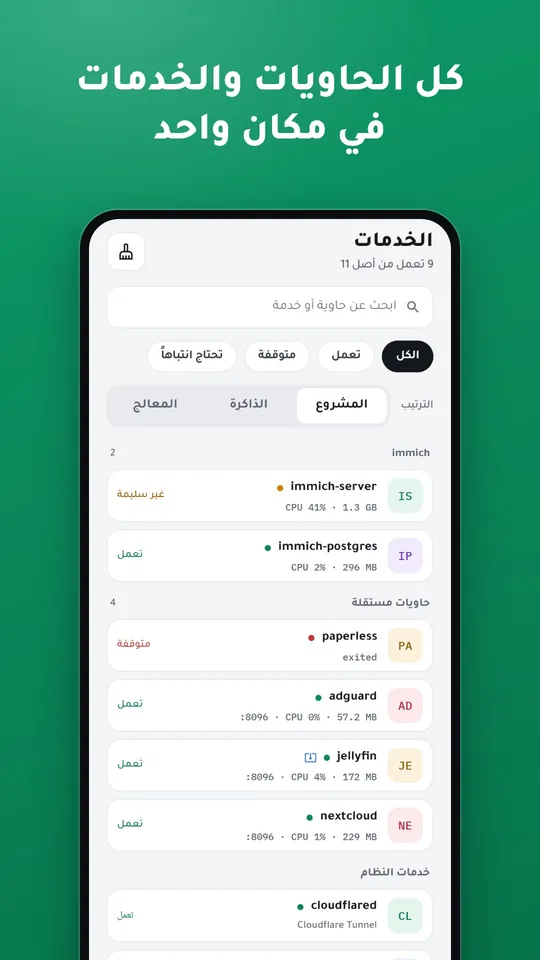
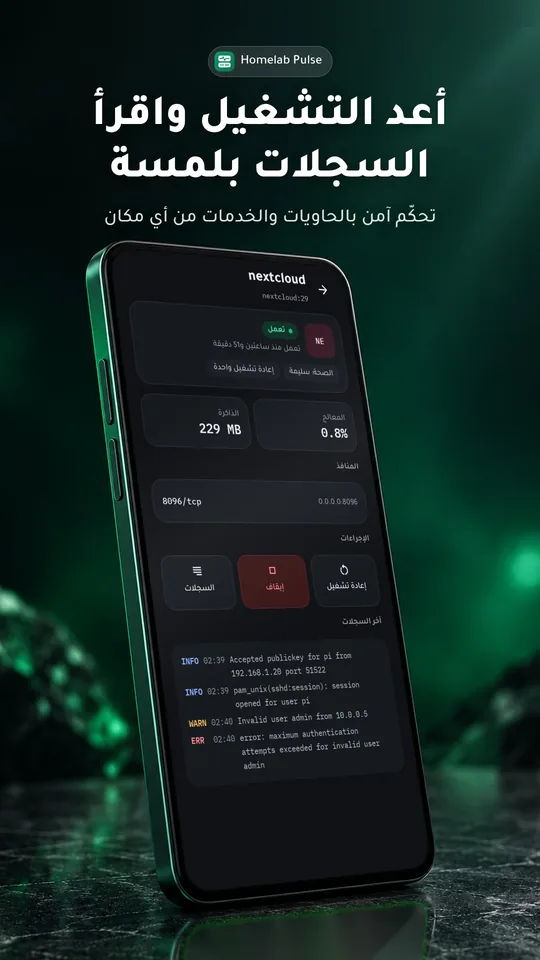
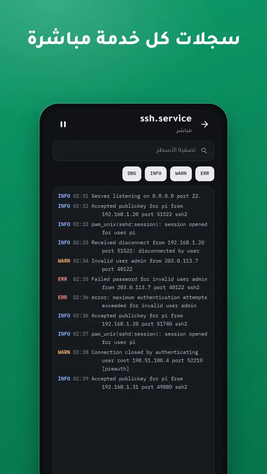
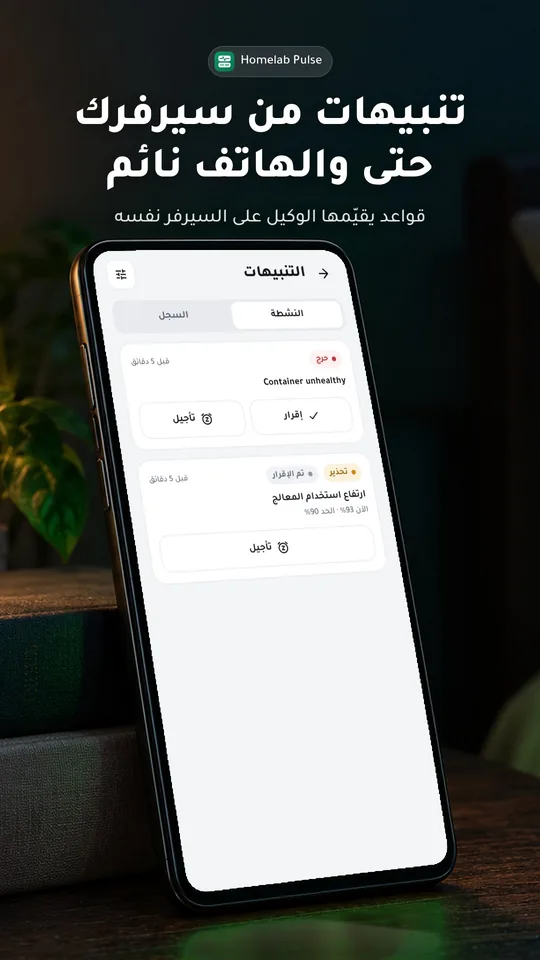
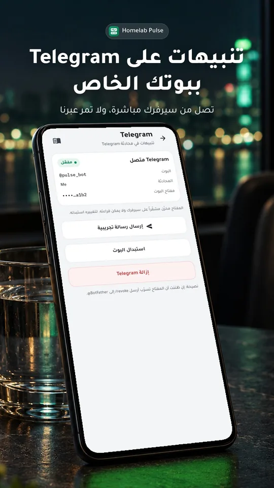
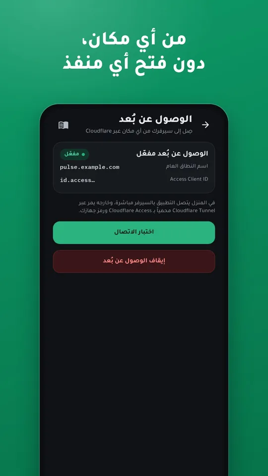

سيرفرك المنزلي في جيبك
Homelab Pulse تطبيق أندرويد يراقب سيرفرك المنزلي ويديره عبر وكيل صغير تثبّته عليه: حالته فوراً، وتنبيهات قبل وقوع المشكلة، وإصلاح آمن من أي مكان.

كل ما يحتاجه سيرفرك المنزلي
مصمّم لبيئة الـ homelab: Docker وsystemd والنسخ الاحتياطي وCloudflare Tunnel، بالعربية أولاً.
- لوحة حيّةالمعالج والذاكرة والحرارة والتخزين مع صحة الأقراص والشبكة، وتاريخ حتى 30 يوماً.
- الحاويات والخدماتحالة Docker وsystemd وصحتها واستهلاكها، وتشغيل وإيقاف وإعادة تشغيل بلمسة.
- تنبيهات من السيرفر نفسهقواعد يقيّمها الوكيل حتى والهاتف نائم، بإشعارات مشفّرة من طرف إلى طرف أو عبر Telegram.
- الطرفية والسجلاتطرفية كاملة تعرض العربية بشكل صحيح، وسجلات مباشرة لكل خدمة.
- من أي مكانعبر Cloudflare Tunnel وAccess دون فتح أي منفذ، مع تنقّل تلقائي بين المنزل والخارج.
- يفهم السيرفر المنزليحداثة النسخ الاحتياطية، والتحديثات، وfail2ban وUFW، وفحوص HTTP وTCP، وUptime Kuma.
- للعائلة والفريقعدة سيرفرات، ودعوات لمرة واحدة بصلاحيات، وسحب فوري، وسجل تدقيق لكل إجراء.
- خاص منذ التصميمبلا حسابات ولا إعلانات ولا تتبّع؛ بيانات سيرفرك تبقى بين هاتفك وسيرفرك.
يعمل في ثلاث خطوات
وكيل صغير على سيرفرك يجمع المقاييس ويحفظ التاريخ ويرسل التنبيهات، والتطبيق يعرض كل شيء ويتحكّم به.
- ثبّت الوكيل
أمر واحد على Debian أو Ubuntu أو Raspberry Pi OS.
curl -fsSL https://github.com/Aldaghir/homelab-pulse/releases/latest/download/install.sh | sudo sh
يعمل هذا الأمر مع أول إصدار عام قريباً. أعلمني عند الإطلاق
- امسح رمز QR
يقترن هاتفك بسيرفرك بشهادة مثبّتة ورمز جهاز خاص به.
- راقب وتحكّم من أي مكان
تنبيهات على هاتفك أو Telegram، ووصول آمن عبر Cloudflare.
لقطات من التطبيق








خصوصيتك وأمانك أولاً
- بلا حسابات ولا تتبّعلا تسجيل ولا إعلانات ولا تحليلات.
- مفاتيح مشفّرة على سيرفركمفاتيح التكاملات لا تُقرأ مرة أخرى ولا تظهر في أي سجل.
- صلاحيات لكل جهازمشاهد أو مشغّل أو مسؤول، وسحب فوري للصلاحية.
- تأكيد للإجراءات الحساسةتأكيد بالضغط المطوّل والبصمة، وكل تغيير مسجّل.
أسئلة شائعة
ما الأنظمة المدعومة على السيرفر؟
Debian وUbuntu وRaspberry Pi OS بإصدار 64 بت (arm64 أو amd64) مع systemd. ودعم Docker يعمل تلقائياً إن وُجد.
هل أحتاج إلى فتح منافذ في الراوتر؟
لا. في المنزل يتصل التطبيق بالسيرفر مباشرة، وخارجه يمر عبر Cloudflare Tunnel محمياً بـ Cloudflare Access.
أين تُحفظ بيانات سيرفري؟
على سيرفرك. يتصل التطبيق بالوكيل مباشرة، والإشعارات مشفّرة من طرف إلى طرف فلا يستطيع أحد غيرك قراءتها.
كم يستهلك الوكيل من موارد السيرفر؟
على Raspberry Pi 5: نحو 26 ميغابايت من الذاكرة وأقل من 1% من المعالج في المتوسط.
هل تصلني التنبيهات بلا خدمات Google؟
نعم، عبر Telegram ببوتك الخاص؛ يرسلها السيرفر مباشرة حتى لو كان الهاتف بلا خدمات Google.
جاهز لتجرّبه؟
ثبّت الوكيل على سيرفرك، واتبع الدليل خطوة بخطوة.
دليل التثبيت